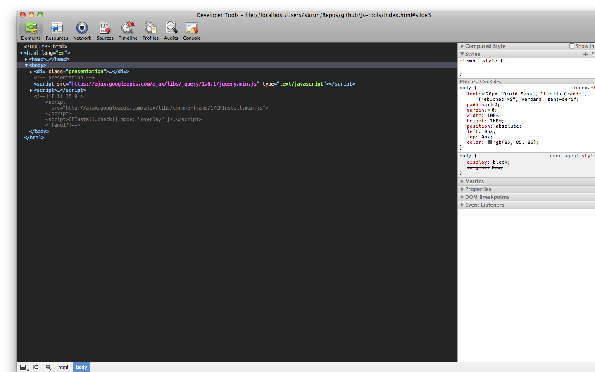
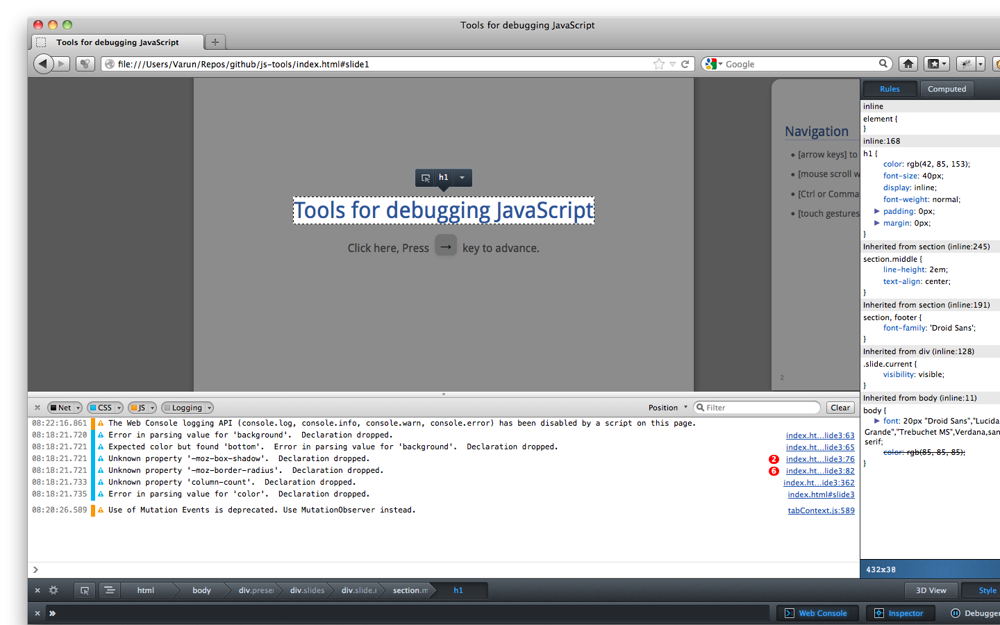
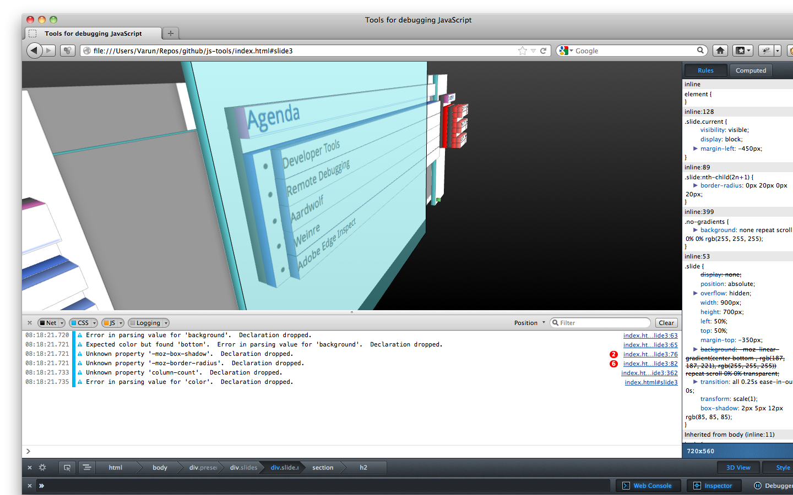
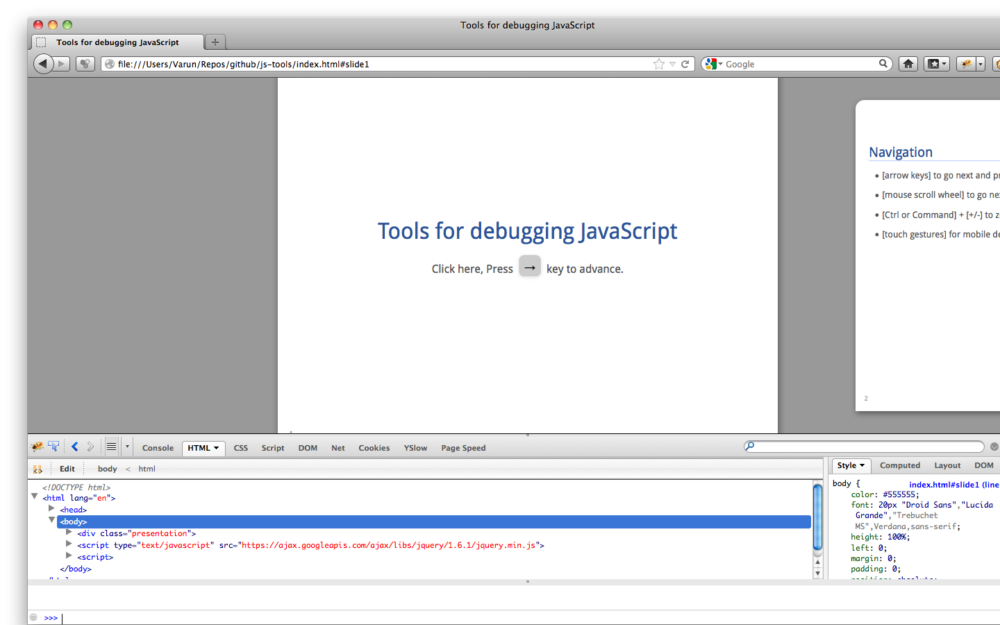
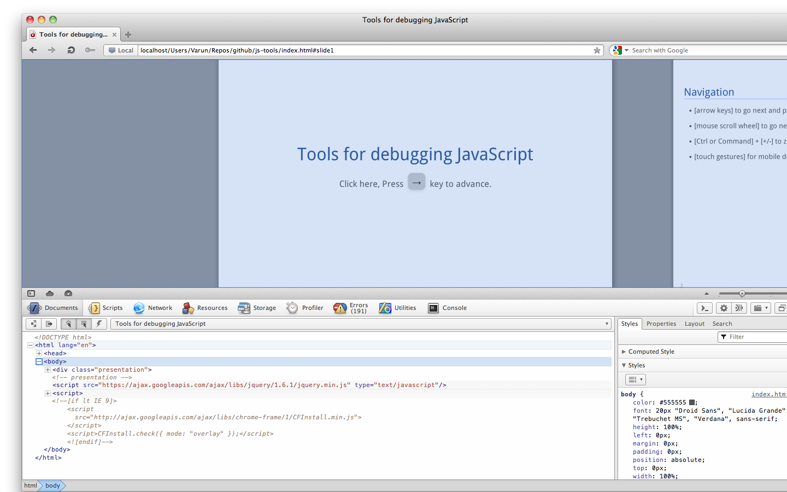
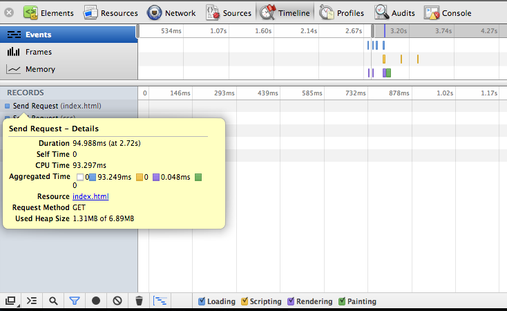
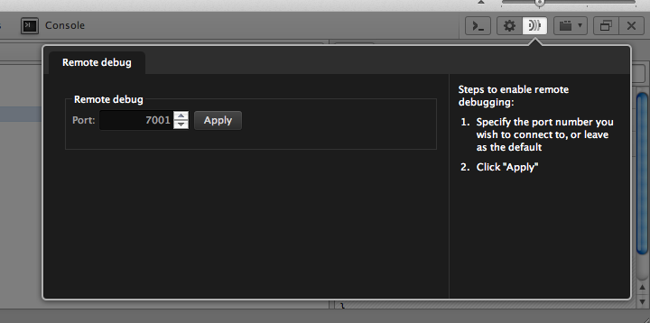
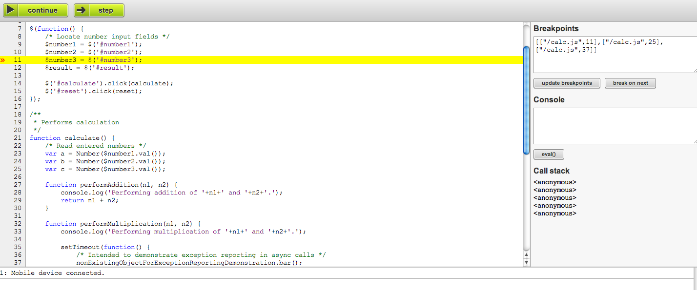
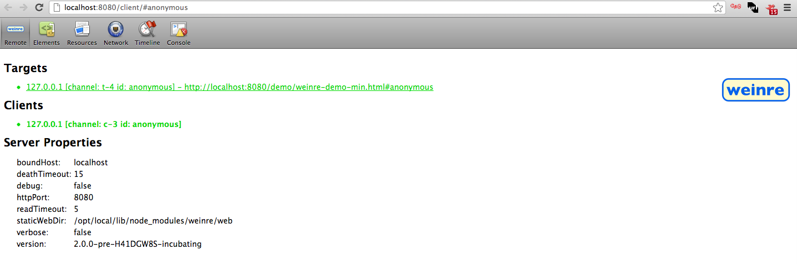
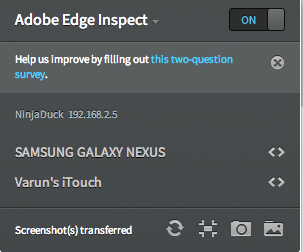

Click here, Press → key to advance.
Presented at JSFoo Bangalore 2012 (20-Oct-2012)





Lets you see everything in one DOM tree, and allows inspection and on-the-fly editing of DOM elements.
Lets you inspect resources that are loaded in the inspected page. It lets you interact with HTML 5 Database, Local Storage, Cookies, AppCache, etc.
Lets you inspect resources that are downloaded over the network.
npm install -g yslow
phantomjs examples/netsniff.js http://www.varunkumar.me > output/snap-demo.har yslow --info basic --format plain output/snap-demo.har
Lets you debug your JavaScript code.
Gives you a complete overview of where time is spent when loading and using your web app or page. All events, from loading resources to parsing JavaScript, calculating styles, and repainting are plotted on a timeline.

Lets you profile the execution time and memory usage of a web app or page.




Some cool stuffs